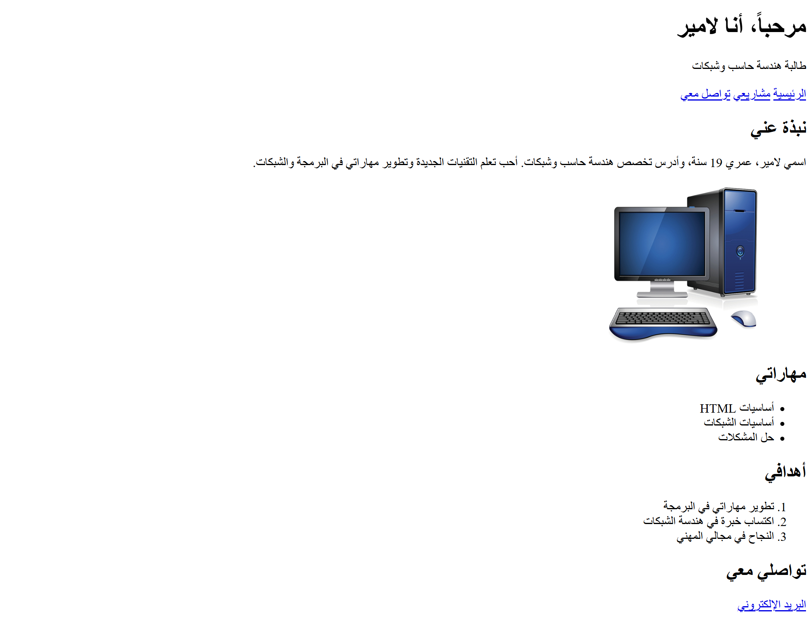

مشروع موقع شخصي
إنشاء موقع شخصي باستخدام HTML للتعريف بنفسي ومهاراتي وأهدافي.

إنشاء موقع شخصي باستخدام HTML للتعريف بنفسي ومهاراتي وأهدافي.

التعرف على أساسيات شبكات الحاسب وكيفية اتصال الأجهزة ببعضها.
| المهارة | المستوى |
|---|---|
| HTML | مبتدئ |
| الشبكات | متوسط |
| البرمجة | مبتدئ |
| حل المشكلات | جيد |